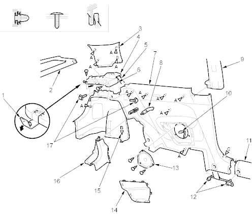

Interior Trim
Trim Removal/Installation - Rear Side Area
|
20-30 |
|
NOTE:
- Put on gloves to protect your hands.
- When prying with a flat-tip screwdriver, wrap it with protective tape to prevent damage.
- Take care not to bend or scratch the trim and panels.
To remove the rear side trim panel, remove these items:
- Rear seat cushion and rear seat-back (see page 20-40)
- Trunk floor mat and spare tyre lid (see page 20-31)
- Trunk side spacers, for some models (see page 20-31)
- Rear trim panel (see page 20-31)
Remove the trim as shown. On the right side, disconnect the trunk compartment light connector.
Install the trim in the reverse order of removal and note these items:
- Replace any damaged clips.
- Make sure the trunk compartment light connector is plugged in properly.
- If the threads on the rear side trim panel mounting self-tapping ET screws are worn out, use an oversized self-tapping ET screw made specifically for this application.
- When installing the rear side shelf, slip the rear seat belt through the slit in the trim.
- Before installing the anchor bolts, make sure there are no twists or kinks in the belt.
Fastener Locations
A  : Clip, 11 B : Clip, 1 C : Clip, 1
: Clip, 11 B : Clip, 1 C : Clip, 1
(White)
 |
- LID
- REAR CENTRE SHELF
- REAR PILLAR TRIM
- REAR SIDE SHELF
- REAR SEAT BELT
- SLIT
- REAR SIDE TRIM PANEL
- REAR SEAT STRIKER CAP
- CENTRE PILLAR UPPER TRIM
- REAR SPEAKER CONNECTOR
- DOOR SILL TRIM
- FRONT SEAT BELT LOWER ANCHOR BOLTS
7/16-20 UNF
32 Nm (3.3 kgf/m, 24 lbf/ft)
- REAR SPEAKER
(For some models)
- REAR SPEAKER LID
- Without trunk side spacers model.
- REAR BULKHEAD COVER
- SELF-TAPPING ET SCREWS
5 x 0.8 mm
4 Nm (0.4 kgf/m, 3 lbf/ft)
|